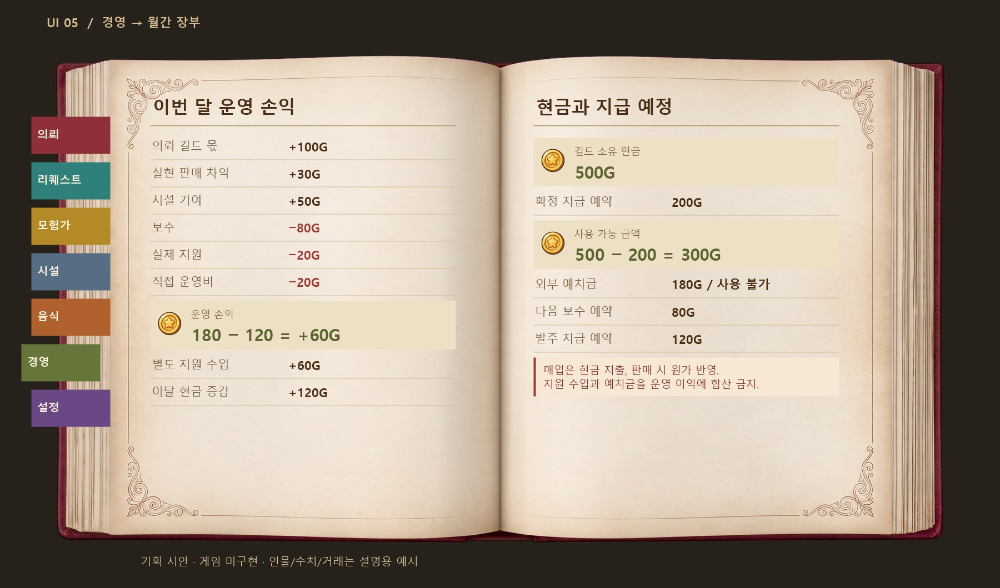

V2 개정 제안판 · 신규 게임 규칙 미반영. 붉은 목차·본문을 클릭하면 V1 대비 변경 요약을 볼 수 있습니다.
장부와 관문 1
기존 구현·측정 기록은 2026-11-16 기준입니다. V2 신규 설계의 구현·검증 결과가 아니며, 아래 추가·수정 제안과 구분합니다.
장부 화면은 "수입 − 지출(건설비 포함)"을 보여 주고, 밸런스 검증(관문 1)은 "운영 순이익(건설비 제외)"을 씁니다. 두 숫자가 다르다는 점을 먼저 알아 두셔야 합니다.
장부 항목
| 구분 | 줄 |
|---|---|
| 수입 | 수수료 · 소재 판매 차익 · 식사 판매 · 주점 매출 · 왕국 보조금 · 리퀘스트 보상 |
| 지출 | 시설 건설비(리퀘스트 돈 내기 포함) · 지명 섭외비 · 침공 대비 물약 · 기타(의뢰 떼기) |
| 순이익 | 수입 − 지출 |
- 주점 매출과 왕국 보조금은 월말 결산 때 한꺼번에 들어옵니다.
- 운영 순이익 = 순이익 + 시설 건설비. 섭외비와 침공 물약은 운영 순이익에 포함됩니다.
관문 1
관문 1은 "게임 규칙"과 "시뮬레이터"를 100판씩 1년 돌려 경제와 성공률이 기준 안에 있는지, 둘이 서로 맞는지 보는 검증입니다. 규칙을 바꿀 때마다 다시 돌립니다. GitHub에 올리면 자동으로 돌아갑니다.
| 지표 | 게임 | 시뮬레이터 | 기준 | 판정 |
|---|---|---|---|---|
| 첫해 월 운영 순이익 | 573G | 604G | 300~600G, 차이 10% 미만 | 통과 |
| 의뢰 성공률 | 94.9% | 95.3% | 80~95%, 차이 5%p 미만 | 통과 |
| 시점 | 게임 | 시뮬레이터 |
|---|---|---|
| 2026-10 데이터 분리 | 436G · 75.9% | — |
| 2026-11 전투 도입 | 459G · 93.2% | 454G · 92.0% |
| 2026-11-16 (지금) | 573G · 94.9% | 604G · 95.3% |
- 시뮬레이터(
sim_engine.js)는 게임 규칙을 단순하게 옮긴 별도 코드입니다. 게임 규칙을 바꾸면 시뮬레이터도 같이 바꾸는 것이 작업 규칙입니다. - 경제 구조를 바꾸시면 관문 1의 기준값(300~600G)도 함께 다시 정해야 합니다.
V2 추가·수정 규칙 — 제안·미반영
현금 증감·운영 손익·사용 가능 금액을 각각 보여 줍니다.
월간 장부 — ECON-06 · UI-01 / 제안·미반영

큰 이미지 보기 · 기획 시안 / 미구현 / 수치 예시

| 숫자 | 포함하는 것 | 제외·구별 |
|---|---|---|
| 현금 증감 | 실제 길드 현금 유입·유출, 건설·매입 포함 | 외부 소유 예치금 |
| 운영 손익 | 수수료·실현 차익·시설·이행 대가 − 보수·실비·직접비 | 지원·일회성 수입 별도 |
| 사용 가능 금액 | 길드 소유 현금 − 확정 지급 예약 | 위탁금·미이행 선수금 사용 불가 |
| 원가 미상 재고 | 기존 재고 표식 | 가짜 정밀 이익 산출 금지 |
기존 ‘건설비 포함 화면 순이익’과 ‘건설비 제외 관문 지표’는 새 운영 손익과 다릅니다. 전환기에는 기존 지표도 함께 기록합니다.
정산 검증 — 향후 구현 시험, 아직 미실행
| 시험 묶음 | 통과 조건 |
|---|---|
| 일반·혼성·101G/3명 | 총액 보존, 정수 잔액 재현 가능 |
| 출발 후 수수료·계약 변경 | 출발 조건 유지 |
| 길드 발주·취소·반복 납품 | 지급·인도 1회, 자가 수수료·보조금·무한 성장 없음 |
| 위탁품·매입 재판매 | 타인 물품 사용 불가, 원가·매출 중복 없음 |
| 식사·술·지원 물약 | 잔액 검사, 부담 합계=가격, 내부 지원으로 이익 생성 없음 |
| 월중 영입·종료·부상·사망 | 근무분·기본 보수·유족 정산 일치 |
| 호위·침공·귀환 주 지명 | 중복 배치 없음, 기존 귀환 예외 보존 |
| 저장·재정산·상담 재클릭 | 거래·급여 중복 없음, 동일 조건 무한 재추첨 없음 |
| 기존 저장·창립·계약 모험가 인원 | 소급 급여·강제 고용 없음, 재고·상주 혜택·정원 보존 |
| 계약 모험가 0명 | 기존 F→E 진행 가능 |
비교 실험
| 범위 | 비교할 정책 | 측정 |
|---|---|---|
| 첫 48주 | 기존 / 보조금 단독 / 계약 단독 / 결합 | 현금 저점·순이익·성공률·승급 |
| 동일 E급 진입 +96주 | 계약 모험가 0 / 핵심 1~2 / 최대 계약 | 가용성·보수·유휴 비용 |
| 수수료·지원 | 높은 수수료·낮은 지원 / 낮은 수수료·높은 지원 | 개인 구매력·수주·성장·재정 |
기준 커밋·초기 설정을 함께 기록합니다. 후반 미구현 효과는 임의로 넣지 않습니다. v1 과거 측정은 비교 기준일 뿐 v2의 통과 결과가 아닙니다.
V2 통합 점검 — 8단계 (2026-11-18, 게임 반영 상태)
첫해 48주(결정 29: 프로토타입 판단 범위) 100판 기준, 관문 1 기준은 그대로 둡니다. 상세: docs/balance/economy_v2_integration.md.
| 지표 | 게임 | 시뮬레이터 | 판정 |
|---|---|---|---|
| 첫해 월 운영 순이익 | 479G | 507G | ✅ 300~600G, 차이 5.8% |
| 의뢰 성공률 | 96.0% | 94.9% | ⚠️ 상한 95%를 조금 넘음 → 결정 30으로 늦장 실패를 켠 뒤 93.0% · 91.7% ✅ (순이익 449G · 447G — 시뮬레이터에만 있던 F급 보스 의뢰를 없애 차이 0.4%) |
| 금고 최저점 (중앙 · 하위 10%) | 102G · 96G | — | 첫해 적자 달 100판 중 3개 |
| 48주 안 E 승급 | 88판 (중앙 41주) | — | — |
| 48주 금고 (중앙) | 2,646G | — | 2년차 이후 금 쌓임은 결정 28로 프로토타입 뒤 |
- 장부 화면에 길드 발주 줄을 더했습니다(쓴 달에만 보임). 수입 합계 − 지출 합계 = 순이익.
- 화면 8개(의뢰 · 리퀘스트 · 길드 발주 · 명부 · 계약 제안 · 장부 · 소재 판매 · 매입 위탁) × 새 게임 · 30주 진행에서 오류 없음. 옛 저장 불러오기 정상.